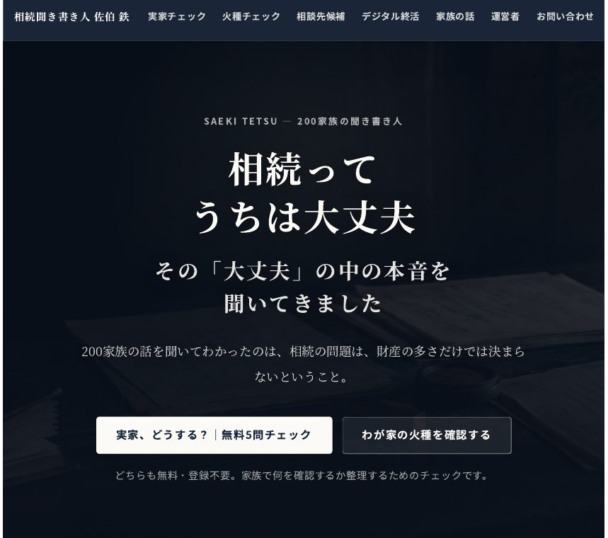
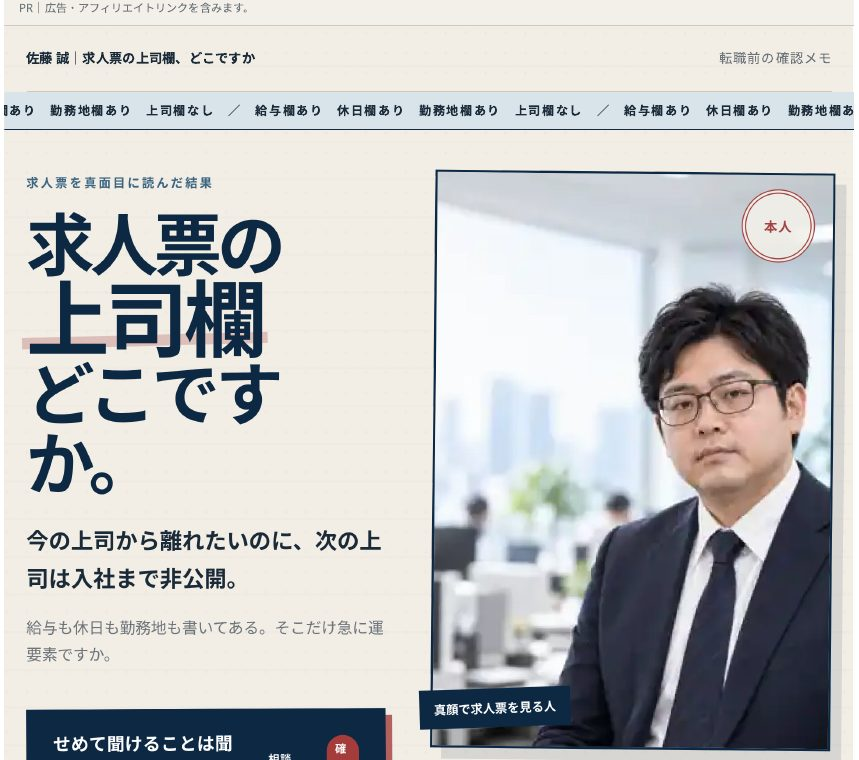
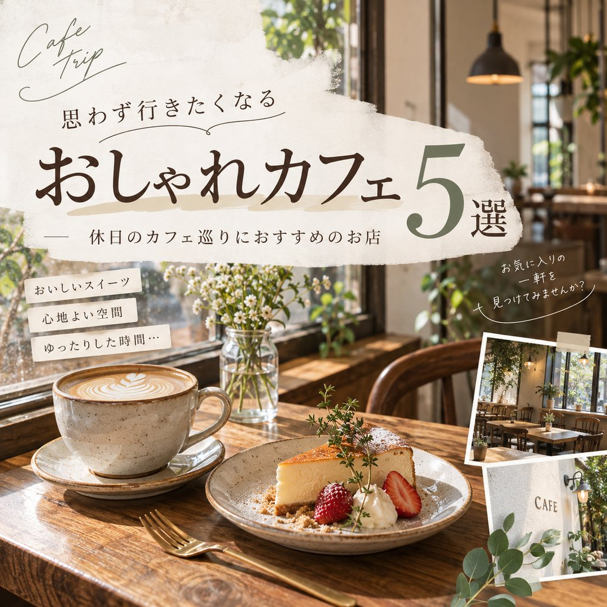
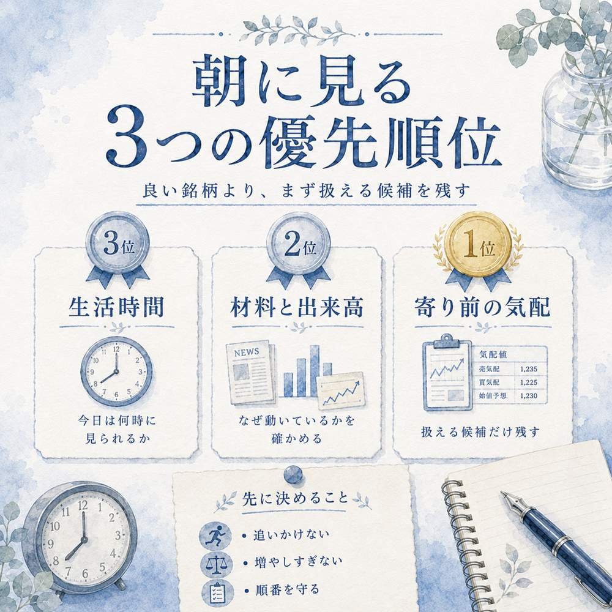

一
YouTube企画・プロット
題材に合わせて冒頭のつかみ、話の展開、転換点、結末を整理します。まず構成案で方向性を共有し、続きが気になる流れを組み立てます。定期的な企画・構成のご依頼にも対応します。
構成サンプルを見る →YouTubeの企画・構成／ショート動画／Web・LP制作
何を、どんな順番で伝えるか。
企画から制作まで対応します。
動画・SNSは継続的な制作を中心に。
サイト・LPは単発のご依頼にも対応しています。
題材に合わせて冒頭のつかみ、話の展開、転換点、結末を整理します。まず構成案で方向性を共有し、続きが気になる流れを組み立てます。定期的な企画・構成のご依頼にも対応します。
構成サンプルを見る →フック、台本、演出設計、編集まで対応します。CapCutとClaude Codeを活用し、内容の確認と仕上げは自分で行います。継続的な制作のご相談も歓迎します。
作品例を見る →企画・構成・デザイン・実装まで対応します。広告流入や問い合わせなど、目的に沿った導線を設計します。単発のご依頼も対応可能です。納期は制作範囲に応じてご相談ください。
作品例を見る →投稿の目的に合わせ、スマートフォンで読める文字の大きさと情報の優先順位を重視して制作します。PNGで納品し、修正は原則2回まで対応します。
作品例を見る →実際に制作したサイト・動画・画像と、YouTube向けの自主制作プロットを掲載しています。サイト作品は「詳細を見る」から、目的・担当範囲・公開ページを確認できます。

担当：企画・構成・文章・デザイン・実装。飲食現場での実体験を起点に、記事から転職相談への導線を設計。
飲食店で働く人の悩みを、自身の現場経験をもとに記事にした情報サイトです。「辞めたいけれど自分が抜けたら店が回らない」「料理は好きでも、今の働き方は続けられない」などのテーマを扱い、トップページから悩み別の記事へ進める構成にしました。記事内では飲食業界向け転職サービスへの案内を自然に配置し、情報収集から相談までをつなげています。企画・構成・文章・デザイン・実装を担当しました。
サイトを見る ↗
担当：企画・構成・デザイン・実装。記事からチェックへの導線を設計。
相続の聞き書きを仕事にしている人の情報サイトです。家族の話を聞いて整理する活動を、記事コンテンツと無料の5問チェックで伝える構成にしました。企画・構成・デザイン・実装まで一貫して担当し、記事から無料チェック、そして相談先の検討へと進む導線を設計しています。煽らない文章トーンを全体で統一しました。
サイトを見る ↗
工夫：求人票の曖昧な表現を、確認すべき具体的な質問へ整理。
転職を考える人向けに、求人票の読み解き方をまとめた、動きのあるLPです。「人柄重視」「風通しの良い職場」など求人票によく見られる表現を取り上げ、面接で確認したい質問に置き換える構成にしました。先に見る3つの確認ポイントから、転職エージェントに相談する流れへ進む導線を設計しています。
サイトを見る ↗自主制作サンプル／未公開・受託実績ではありません
想定：約6分の職場ドラマ
登場：ひより（28歳・主人公）／莉子（22歳・後輩）／木村（先輩）／店長
閉店後のレジ前。シャッターの音。
ひよりだけがモップを動かしている。
ひより（心の声）
「今日も、私だけ。……いや、今日“も”って何だ」
足元に、他人のレシート整理の箱。自分の発注作業は未着手のまま。
木村
「ひよりちゃん、ごめん！これ、ちょっとだけ見といて」
ひより
「いいですよ！」（即答）
店長
「在庫表、今日中に更新できる？」
ひより
「あ、はい」
休憩室で同僚から「断れなくて偉いよね」と言われる。笑顔で返すが、手が止まる。
ひより
「だって、断ったら嫌な人になるじゃないですか」
スマホには、自分の発注締切「20時」の通知が積み重なる。
莉子
「ひよりさん、これとこれ、どっちを先に終わらせればいいですか？」
ひより
「え……それ、店長に聞いたら」
莉子
「聞いていいんですか？」
ひよりは少し黙る。
ひより
「……聞いて、いいんだよ」
言った瞬間、自分の言葉が自分に刺さる。通知画面の「20時」を見る。
店長室の前で深呼吸。小さく二度ノックする。
ひより
「店長、全部は時間内に終わりません。どれを先にしますか」
店長は画面から目を離さない。
店長
「……今、言う？ もう20時前だよ」
空気が固まる。ひよりの指先が震える。いつもなら「すみません、やります」が出る場面。
ひより
「今だから言います。発注が20時締切で、在庫表と木村さんの分、全部は無理です」
店長がため息をつく。キーボードの音が止まる。
店長
「……発注、先にやって。在庫表は明日の朝」
「ありがとうございます」を言いかけて、ひよりは飲み込む。
ひより
「はい。……そうします」
部屋を出ると、莉子が小さく親指を立てる。ひよりは笑い返せず、ただ頷く。
発注画面を開く。送信ボタンを押した時刻は19時52分。
木村のレシートの箱に付箋を一枚。
「明日の朝、一緒にやりましょう」
構成の狙い：レシートの箱と20時締切の通知で負担を可視化。後輩との会話を転換点にし、店長の渋い反応を越えて優先順位を伝える小さな一歩で終える。再生数や受注成果を示すものではありません。
この環境では動画を再生できませんでした
動画ファイルを開くこの環境では動画を再生できませんでした
動画ファイルを開くこの環境では動画を再生できませんでした
動画ファイルを開く

飲食店のキッチンで働きながら、副業でサイト・動画・画像の制作をしています。
AIで下書きと実装を進め、文章の表現と内容の事実確認は自分で行い仕上げます。
作って終わりにせず、公開後の導線まで見据えた設計を心がけています。
動画・SNS制作は継続的なご依頼を中心に、サイト・LP制作は単発のご相談にも対応します。ご連絡は、ご利用中のサービスのメッセージ機能からお願いします。